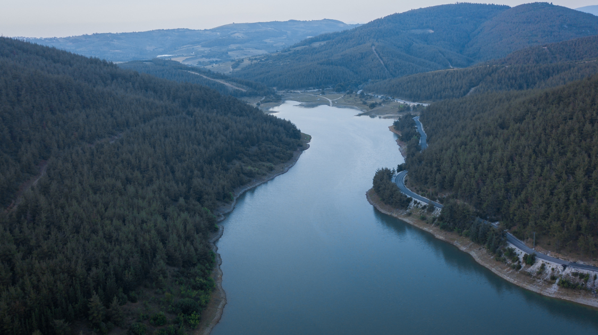

Environment
The Importance of the Fraser River Estuary
By Chloe E.C. | Published May 7, 2021 10:26 p.m. PST

The Fraser River estuary is located in Delta, a city that makes up part of the greater Vancouver area, where the Fraser river meets the sea. It is home to the George C. Reifel Migratory Bird Sanctuary, a protected area of utmost importance to hundreds of species of vertebrates, thousands of plants and several species of small invertebrates.
British Columbia is home to some of the richest estuaries in the world, and the Fraser River estuary is currently the largest one found on the Pacific coast of North America. Many migratory bird species rely on the estuary as a stopover when heading to winter locations such as Mexico, California and Central and South America. Some of these species have flown from areas as far away as Siberia, Alaska or Wrangel Island (Russia). Nearly the global population of Western Sandpipers will stop here to rest and refuel on their journey from Alaska to Wintering grounds throughout California to Peru. In total, migration routes from three different continents converge at the Fraser River estuary. The estuary is not only important to birds, but also to salmon. Each year the Fraser River spawns millions of salmon, which then move into the other waterways throughout BC.
As crucial to the biodiversity of British Columbia this area is, more than 70% of this wild habitat has disappeared due to human activity. The land around the estuary is wide and flat, making it an ideal place for developers to build condos and municipal areas. Other sections of the marsh have been drained into ditches to make the land suitable for agriculture. Our knowledge of the ecosystem's importance has not stopped us from exploiting it for our own benefit, simply because it is easier to develop. This has put the Fraser Estuary at an important crossroads for the future, in which its survival depends on our decisions. Two thirds of the species at risk that rely on the Estuary have a 50% chance or less of surviving on the estuary within the next 25 years. Despite these grim statistics, conservation specialists have drawn conclusions that with a strict set of management actions, nearly all the species currently thriving have a 60% chance of survival. It would require a high budget, but we have learned again that humankind is not separate from the natural world, and by ensuring the estuary’s survival we take care of our well-being just as much as the wildlife.